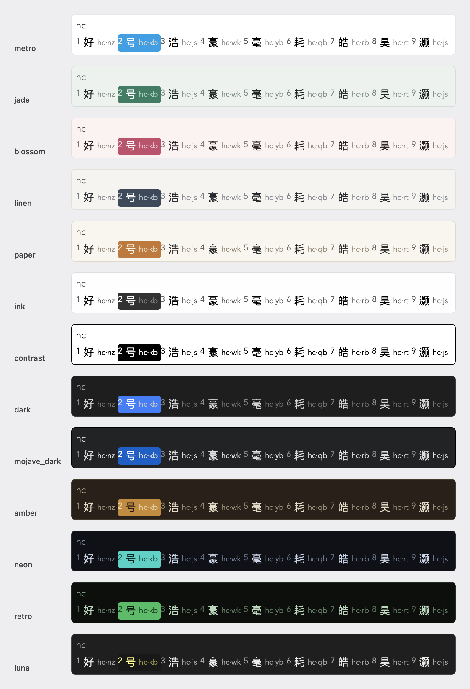

自家实现的输入引擎（纯 C）+ InputMethodKit 前端。不用 Xcode 工程，一台装了 Command Line Tools 的 Mac 就能编译出能真正打字的输入法。
# 编译 + 组装 .app + ad-hoc 签名（几秒） ./build.sh # 自检：码表读得到吗 ./build/SimpleFly.app/Contents/MacOS/SimpleFly --check # 装到 ~/Library/Input Methods/ ./install.sh
双拼音码查字、音形 4 码定字、四键唯一即上屏 —— 与官方 flypy.schema.yaml 逐条对齐。
引擎是纯 C，查询 0.2 µs/次；可以脱离输入法在命令行跑单测，727 项断言守护按键行为。
↑ ↓ ← → 四个键都当一维移动、两端回绕；没在组字时照旧放行给应用移动光标。
Ctrl+/ 输全拼或双拼码反查，候选直接标出音形码拆分（好 = hc·nz），支持词语，连着打不用退出。
一行一条绑到任意短编码，永远排第一候选，改完文件立即生效，不会误触发四键上屏。
Ctrl+; 循环切换，或菜单里直接挑，末条「跟随系统亮暗」；底部可显编码提示。
上次选过的词下次排第一。码 → 词单值记忆，纯文本可手改，30 天过期。
词库、短语、记忆两键推上任意网盘，换机整体覆盖恢复，不走任何第三方服务器。
输入法菜单顶项直接更新到最新版本，源码 / 预编译双模式，不覆盖用户配置。
;a → ！两码直出；另含 of 特殊符号 676 个、emoji 313 个、引号左右交替。
逐条对齐官方 schema，官方依据全部可考。
| 按键 | 行为 |
|---|---|
| a–z ; ' | 累积编码，实时出候选 |
| 1–9 / 空格 | 上屏第 N 个 / 当前高亮的候选 |
| ↑ ↓ ← → | 候选里移动高亮，两端回绕；非组字时放行给应用 |
| , . | 顶屏：先把高亮候选顶上去，再打标点 |
| 第 4 码 | 精确匹配唯一时自动上屏 |
| Shift（单敲） | 中 / 英一键切换 |
| Ctrl+. / Shift+空格 | 中英标点切换 / 全半角切换 |
| Ctrl+/ / Ctrl+; | 查编码模式 / 候选窗主题循环 |
| Ctrl+Shift+/ / Ctrl+Shift+; | 选中文字查编码 / 清空重码记忆 |
完整键位表、标点表与官方依据逐条对照，见仓库 README。
13 套配色按「日用 → 夜用」排列，defaults 即时生效。

只需要 Command Line Tools（xcode-select --install），不需要 Xcode。